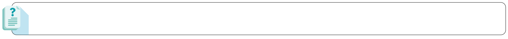

What Would You Do? — Citizen Engagement Explorer
b4_wg187_261020_01These are six tools every citizen has. Read what HIGH, MEDIUM and LOW mean — then tap Start.
| HIGH | Can directly solve or significantly move the problem forward. |
|---|---|
| MEDIUM | Helps but has limits. Cannot solve the problem alone. |
| LOW | Has little to no impact on this problem. |
Drag each tool into the right box for this problem.
00 of 12

Here's Why
Here is what you discovered.
There is no single best tool. Every problem needs a different approach. An informed citizen knows which tool works best — and when.
Go back home?
Your sorting for this round will be cleared.